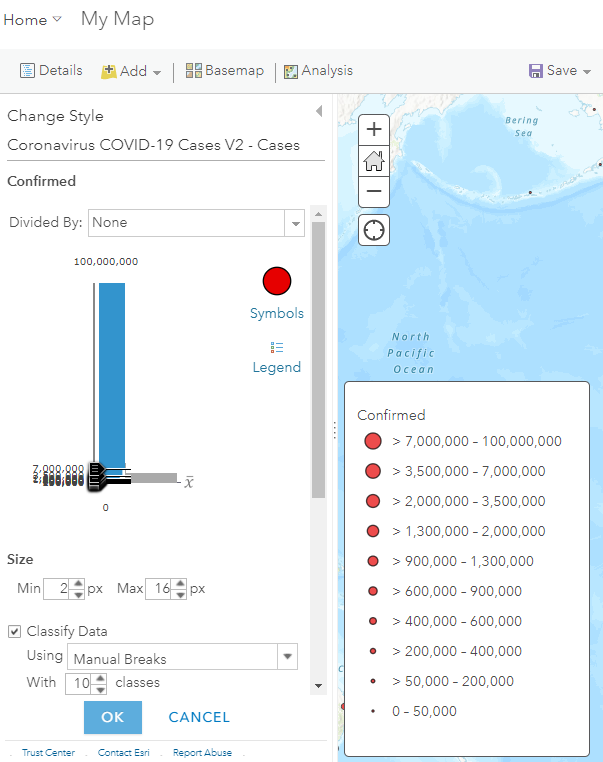

Assignment 4
Create a COVID-19 Dashboard
Create a web app in ArcGIS Online that uses layer styles to communicate geographic information. Use different symbols, shapes, colors, or sizes to represent a dataset, and publish the map in a web app that gives the audience tools to explore the data.
As an example, this exercise will roughly re-create the COVID-19 Dashboard launched by Johns Hopkins University (JHU) as it was in January 2021. Since its inception, the dashboard and its mobile version have received more than a billion views.
An ArcGIS Online Dashboard is a template for a web app that uses panels to display different information as text, maps, graphs, images, or other media. It is useful for a topic like a COVID-19 where several metrics are needed to portray different aspects of the pandemic.
Data
Our COVID-19 dashboard will use multiple datasets created by the JHU team.
- Point data - The Coronavirus COVID-19 Cases V2 item in the ArcGIS Online Living Atlas contains three layers we’ll use. Here they are along with the relevant attributes.
Cases(points) - records of territories (countries, regions, states, provinces, counties) with the number of confirmed COVID-19 cases, cases that recovered, deaths, and the last date the numbers were updated.Cases_country(points) - likeCasesbut only for countries, and it also has the incidence rate (cases per 100,000 population) and mortality (ratio of deaths to cases)Cases_state(points) - likeCasesbut for US states
- Table data - We’ll use another item to build a chart. It is deprecated and could be discontinued at any time, but it has the daily mortality needed for the chart.
Cases_time- contains columns for daily recorded deaths and new confirmed cases
Here is the plan of attack for where the data will be displayed in dashboard panels. You can compare it to the working example at the top of the page.
 Layout of the dashboard labeled with where the layers will be used.
Layout of the dashboard labeled with where the layers will be used.
Steps
Since we are using layers already in ArcGIS Online, we can get started building the map that will be the basis of our dashboard. Here are the steps.
Part 1: Create a Map
-
Sign into ArcGIS Online and open Map Viewer Classic with a new map.
-
Click
Add>Search for Layers>ArcGIS Onlineand search forCoronavirus COVID-19 Cases V2 owner:CSSE_covid19. Click+to add the result to the map. Repeat the search forNc2JKvYFoAEOFCG5JSI6 owner:PD_EsriLAWResponseand again click+to add it, then click the back arrow.

- We only need the layers listed below. Click the
More Optionsbutton on the unnecessary layers andRemovethem. Only show (check the box) for theCaseslayer.Coronavirus COVID-19 Cases V2 - CasesCoronavirus COVID-19 Cases V2 - Cases_countryCoronavirus COVID-19 Cases V2 - Cases_stateNc2JKvYFoAEOFCG5JSI6 - Cases_time

-
Click the
Change Styleicon on theCaseslayer and underChoose an attribute to show, chooseConfirmed. UnderSelect a drawing style, clickOptions. -
You can change the symbols however you think best communicates the information, or stick to the JHU map settings:
 -
Now choose a basemap that highlights the symbols you chose.
Streets (Night)is used here. - Zoom out and pan the map to show the entire world, the click
Saveand fill out the details to save a new map item to your Content.
The map is now complete and ready to be added to a dashboard.
Part 2: Create a Dashboard App
During this part of the assignment, feel free to take creative liberties with the style and design instead of copying the JHU map.
-
With your map open in the Map Viewer, click
Share, selectEveryone, and thenCreate a Web App. -
Click the ArcGIS Dashboards tab and click
Donewith the same details as the map. The dashboard will start in Edit Mode, showing by default a full-page map. -
Click the gear icon on the left sidebar and change the theme to
Dark. Near the gear icon, note the button for Layout, which will be used to add panels, and the Save icon, which you should click after making any major changes to your dashboard. -
Click the Layout button, then the
Headertab, thenAdd header. In the header options, forLogo TypeclickIconand browse for an appropriate graphic and color. ClickDone. - Under the
Bodytab, clickAdd element,Indicator, and choose theCaseslayer. Set the following:Data Options>Statistic>Sum,Field>ConfirmedIndicator Options>Top Text> typeGlobal CasesGeneral Options>Name> typeGlobal Cases. Turn offLast Update Textif it is on.DoneSaveThe new panel will be huge, but just leave it that size for now.
- Add a
Listand choose theCases_countrylayer. Set the following.Data Options>Sort By>Confirmed,DescendingList Options>Line Item Template> type{Confirmed} {Country_Region}. SetLine Item Icon>NoneGeneral Options, forTitleandNametypeCases by Country.DoneSave
The list panel now also appears rather large, next to the indicator.
-
You can access panel settings by moving your mouse pointer over the top left corner of the panel to reveal a blue bar, which includes the
Drag Itembutton. On the indicator panel (Global Cases), click theDrag Itembutton in the blue bar and drag the indicator panel over the list panel. Drop it on the top+icon. The indicator panel should now be above the list, near the top of the dashboard.
-
Move your mouse over the vertical divider between the indicator and the map, and drag the divider left to make the left column (indicator and list) more narrow, and make the map column wider. You can do the same with the horizontal divider between the indicator and list.
- Add another indicator and choose the
Caseslayer for the data.Data Options>Statistic>Sum,Field>DeathsIndicator Options>Top Text> typeGlobal DeathsGeneral Options>Name> typeGlobal Deaths.DoneSave
- Add another
Listand choose theCases_countrylayer. Set the following:Data Options>Sort By>Deaths,DescendingList Options>Line Item Template> type{Deaths} {Country_Region}. SetLine Item Icon>NoneGeneral Options>Name> typeDeaths by Country.DoneSave
-
The global death indicator and the list of country death totals now appear side by side. Move the indicator above the list, but this time hold the
Shiftkey before dropping the indicator at the top position. The two panels are now grouped. Drag the group to the position right of the map. Adjust the vertical and horizontal dividers to fit the content. - Add a
Serial Chartpanel and choose theCases_timetable.Data Options>Filter>Last Updateis within the last 200 days.
This prevents the app from reaching a data limit. If it seems slow, try decreasing to 150 days.Data Options>Category Field>Last Update;Statistic>Sum;Field>Delta ConfirmedCategory Axis>Title>Daily CasesGeneral Options>Name> typeDaily Cases.DoneSave
You can move and resize the chart appropriately.
Now we have enough panels in the dashboard to start making it more interactive so the audience can explore the data. Let’s make it so they can click a country in the Cases by Country list and have the map, chart, and list of death totals show only the data for that country.
-
Move the mouse over the blue options menu for the Cases by Country list and click the gear icon for
Configure. -
Click
Actions>Add Action> add bothFilterandPan. - Under
Filter, clickAdd Targetand add all of:- List - Deaths by Country
- Chart - Daily Cases
- Map - Cases
- Set all
SourceandTargetfields toCountry/Region
-
Under
Pan, clickAdd Targetand addMap (1). ClickDone. Now if you click a country in the Cases by Country list, four things should happen: the map pans to the country, and the chart, map symbols, and list of death totals get filtered to only show data for that country. Clicking the country again in the list clears the filters and again shows global data. - Save your work and return to your Content page in ArcGIS Online. You will have a new Dashboard item. Click it to go to its Item Details page and fill in the metadata.
Try it
- Make a new map showing the percentage of positive cases who died from COVID-19, and the number of positive cases per 100,000 people. Hint: Save your first map as a new map (
Save As, then choose a new name) and show only theCases_countrylayer, using bothMortality_rateandIncident_ratefor the style. This would let you, for example, represent how widespread the virus is with the size of the circles, and how deadly it is with the color.

- Add the new map to your dashboard.
- Add a new chart to the dashboard showing the deaths per day.
- Update the actions of the Cases by Country list so when a country is clicked, the new chart and map react to the click (filter layers, pan map).
- (Optional) Add a panel showing cases for US state-level information, such as cases, deaths, or recoveries, as pictured in the example at the top of the page.
Submit
- The URL to the Item Details page of your dashboard app. Example:
https://www.arcgis.com/home/item.html?id=ABC123orhttps://arcg.is/ABC123
← Back to Assignments